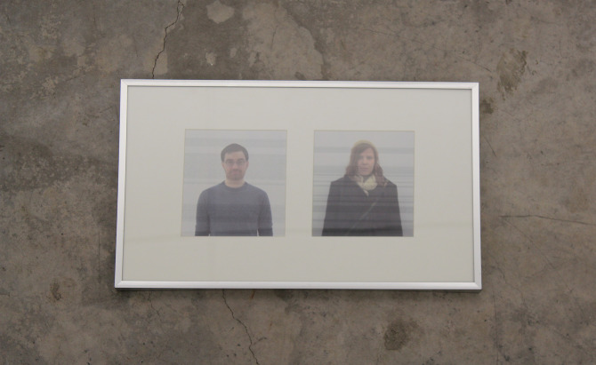
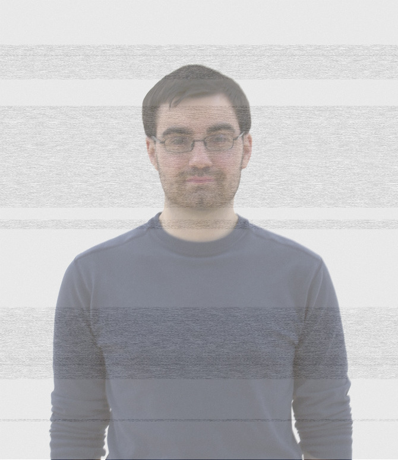
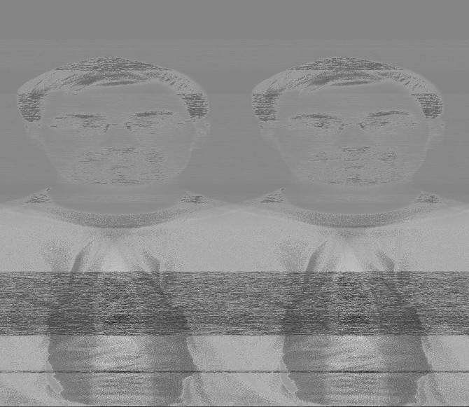
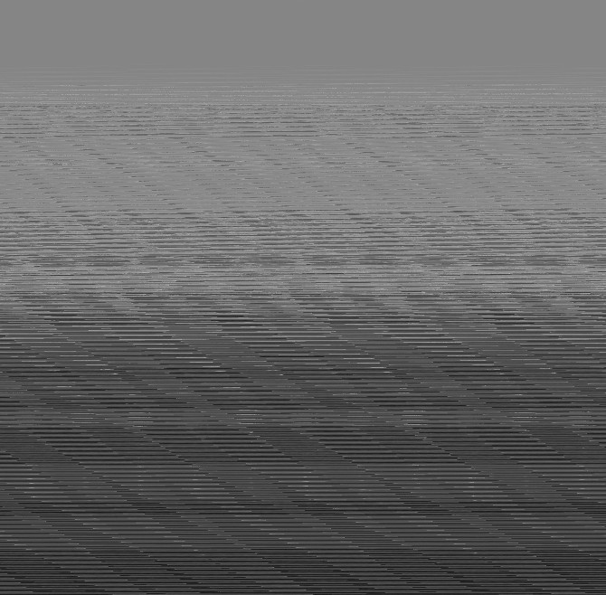
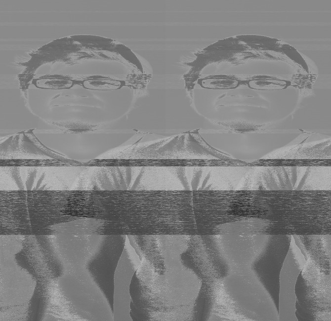

Thought & Sound I
Images created using alternative processing of sound bites taken from asking the subjects to respond to Paul Thek's Teaching Notes questionnaire. The respective individual's replies were then composited with their photograph. The gray banding seen throughout both images represents replies I found myself most interested in, indicative of the impressions we leave on one another as we pass through each others lives.


Thought & Sound II
Repeated looping and layering of .raw sound recordings and photographs through Adobe Photoshop and Audacity. Each image is composed of one field recording and one photograph of the subject. Distortion of the image is created via manually feeding both files through the applications.


